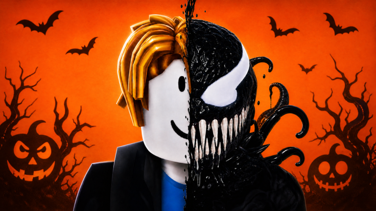

🧪 Venom Evolution: Halloween Admin Abuse joi, 29 oct, la 16:00, și Update 3 duminică, 1 nov, la 17:00

🧪 Venom Evolution are două evenimente oficiale noi pe pagina jocului. Le publică grupul Bottled Potential, cel care face jocul.
📅 Când (ora României):
- 👑 „HALLOWEEN ADMIN ABUSE!”: joi, 29 oct, la 16:00 → joi, 29 oct, la 17:00
- 🆕 „UPDATE 3” (subtitlu: „WORLD 3 & MORE”): duminică, 1 nov, la 17:00 → duminică, 8 nov, la 17:00
✅ Subtitlul oficial al lui Update 3 e „WORLD 3 & MORE”, deci pare că vine o lume nouă. Asta e doar interpretarea noastră a subtitlului, pagina eventului nu are descriere.
✅ Mai e activ acum și „UPDATE 2 + ADMIN ABUSE 🎃”, de duminică, 25 oct, la 17:00 până duminică, 1 nov, la 17:00.
✅ Am citit în API-ul public Roblox (27 oct, ~00:41 RO): 17.879 de jucători online și 15.207.103 de vizite pe „[🎃] +1 Venom Evolution”.
❓ Ce NU știm:
- Ce primești la Admin Abuse (la ambele evenimente descrierea e goală, subtitlul e „???”)
- Ce conține exact Update 3 în afară de „WORLD 3 & MORE”
- Cât costă lumea nouă și cum o deblochezi
🔗 Admin Abuse: https://www.roblox.com/events/6779358123892277873
🔗 Update 3: https://www.roblox.com/events/3406971518427726385
Follow pe TikTok @vexu_online și abonare pe YouTube la VEXU Online. Follow = Au ce bile! 💥